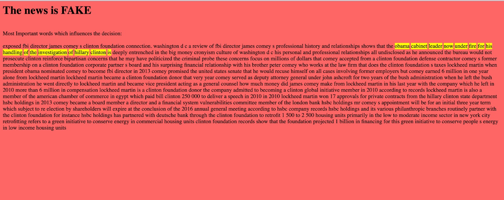
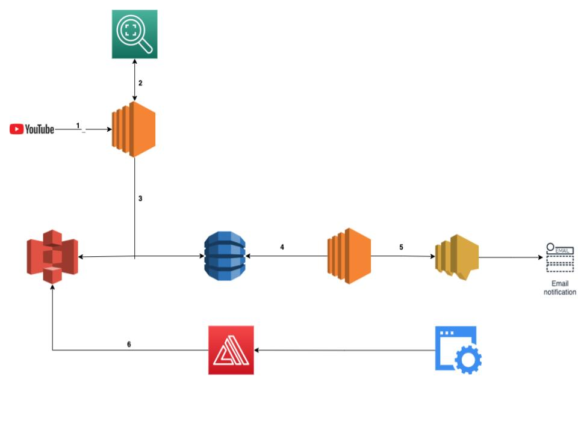
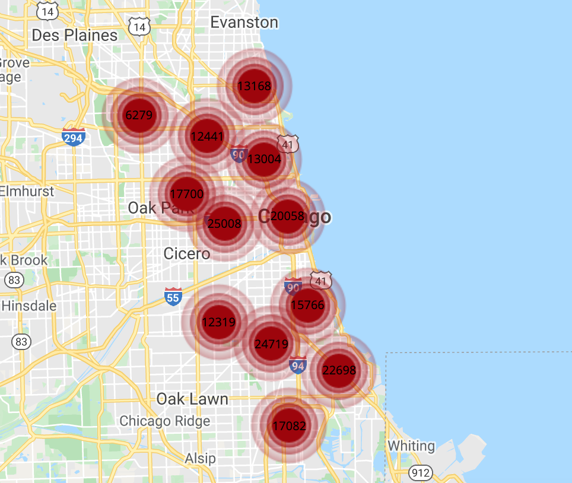
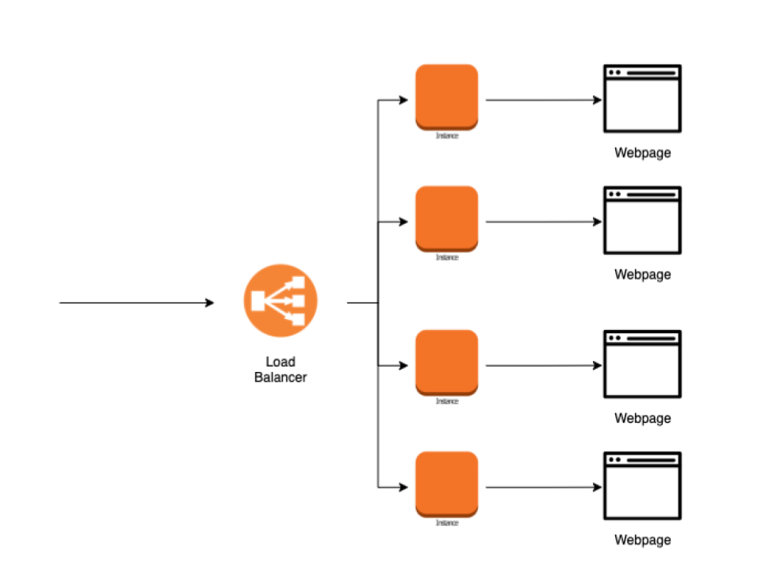
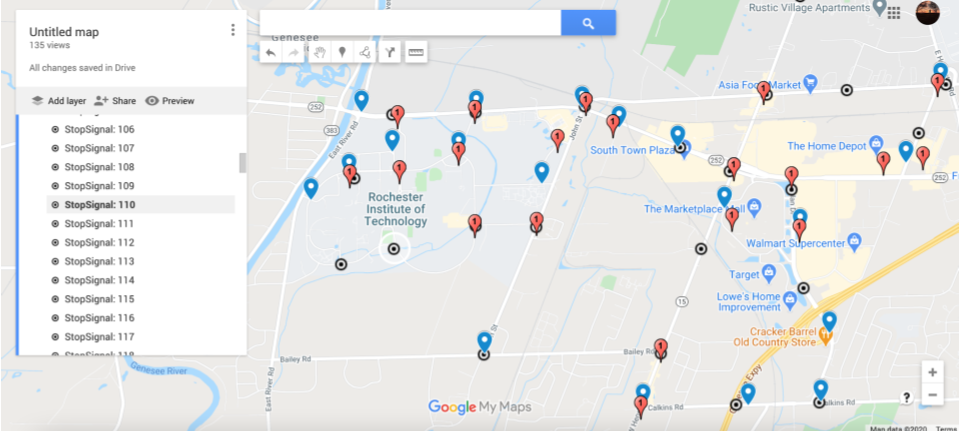
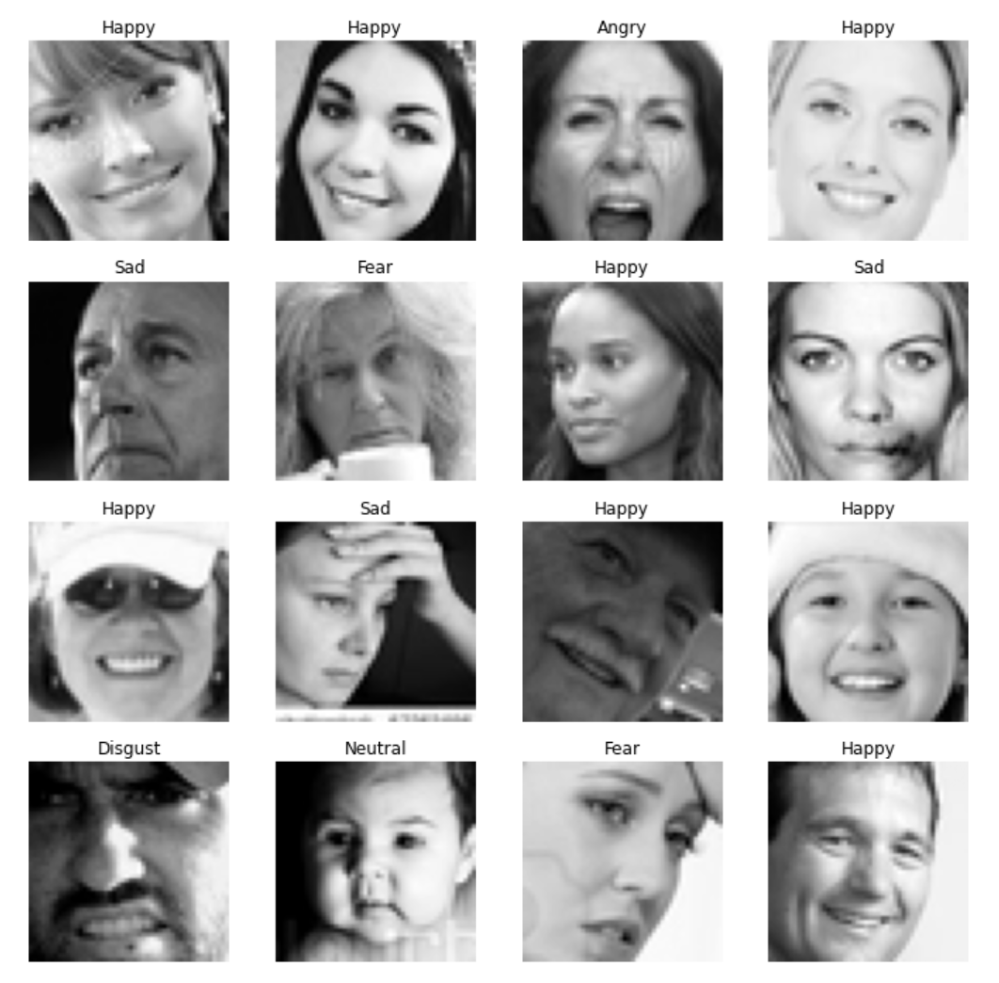
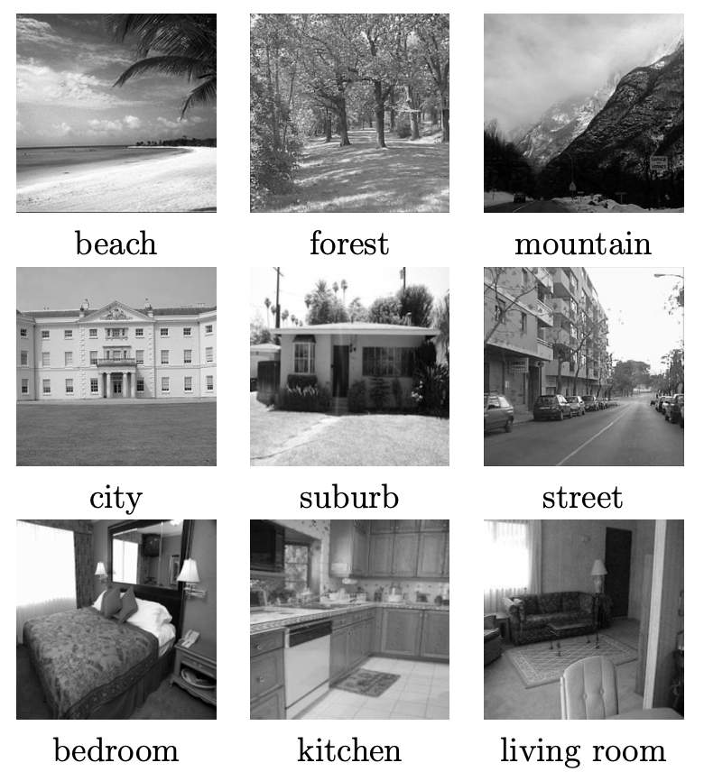
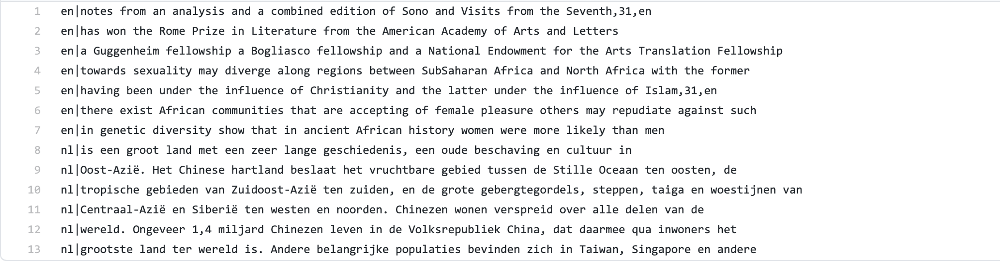
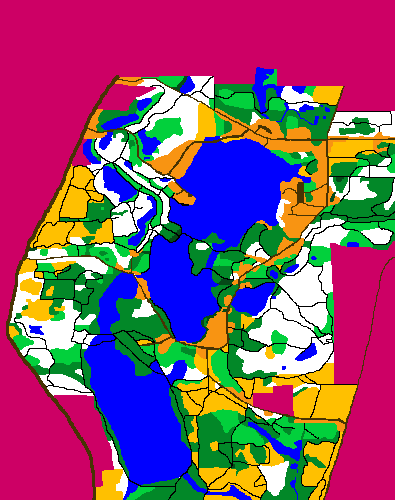
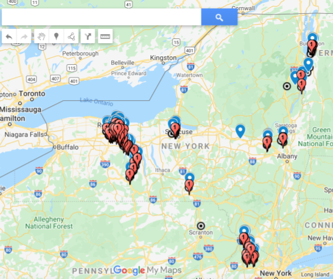

Designed and implemented cloud based application on “Wegaman’s Customer Line” footage from youtube using AWS technologies like EC2, Lambda, Amplify, CloudFormation, S3, DynamoDB, SNS. System detects individuals who haven’t worn masks properly and reports them to the concerned stakeholders. Also created an easy to understand front-end website for viewing real time footage with color coded annotations of their mask status around all individuals.

Visualised and analysed various crime patterns in the state of Chicago. Analysed the importance of economic and education status towards crimes. Implemented multiple supervised learning algorithms to predict the type of crime.

Created a load balanced website on terraform.

Designed and developed a supervised learning method to predict handwritten digits from MNIST database with a test accuracy or more than 92%. (60,000 - train dataset; 10,000 validation dataset).

Cleaned the raw data and reduced the file size to 8% of the original GPS data file received from an Arduino device. Utilized python to implement an unsupervised learning method to find out the number of stop signs, left turns and right turns in and around RIT.

Using supervised learning to predict images from 2013 Kaggle facial expression classification competition. Images and dataset from Kaggle.

Trained two models to predict the scene of an image on VGG16 with Random Forest classifier on top and Densenet with Extra Trees Classifier on top.

Utilized python to implement multiple supervised learning techniques to predict the language of given text based on a set of features with accuracy of more than 98% (5,100 lines - train dataset; 1000 lines validation dataset).

Utilized python to implement A* algorithm from scratch to find the optimal path through a map by accommodating the constraints like terrain, altitude and seasons for orienteering.
July - December 2014
Adaptive Profile Changer
Android Application

Designed and developed an android application that changes the sound profile of the mobile device according to the current GPS location.